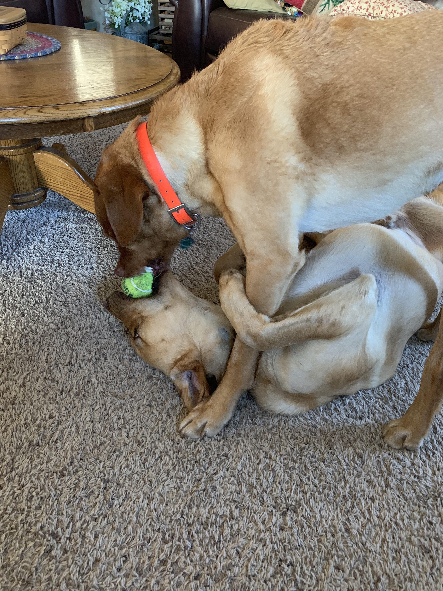

My family's oldest dog, Wilson, is an 8 year old Red Lab. Named after former Wisconsin QB Russell Wilson, Wilson loved to go crazy when people came over. Wilson was very energetic, but unfortunately he tore both his ACL's when he was 4. That really aged Wilson, and he is now blind and quite.
Gordon, a three year old yellow lab, is named after former Wisconsin RB Melvin Gordon. Gordon, nicknamed 'Gordy,' loves to annoy Wilson ever chance he gets. Gordy still acts like a puppy, and he loves to go to the dog park. Gordon loves to snuggle with me when I sleep, so I have to say he is my favorite.
